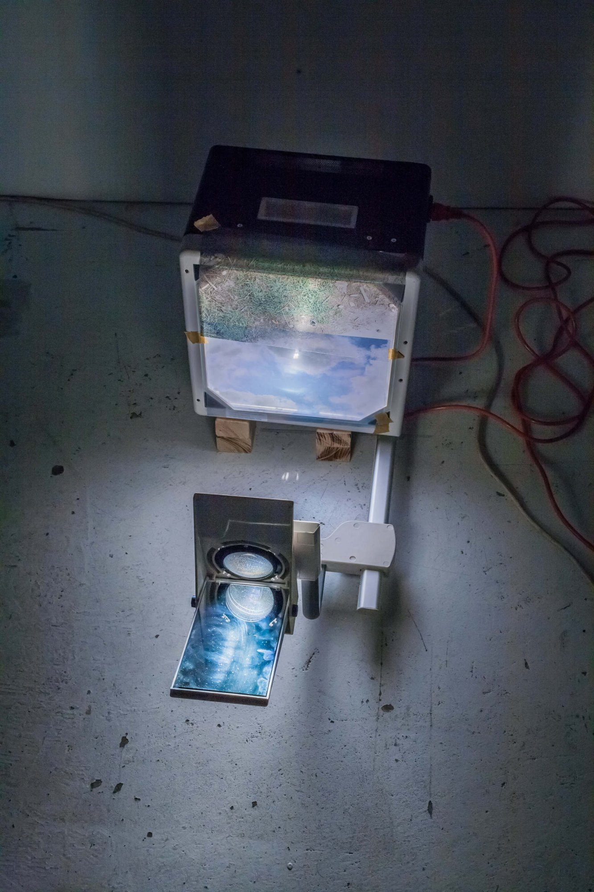
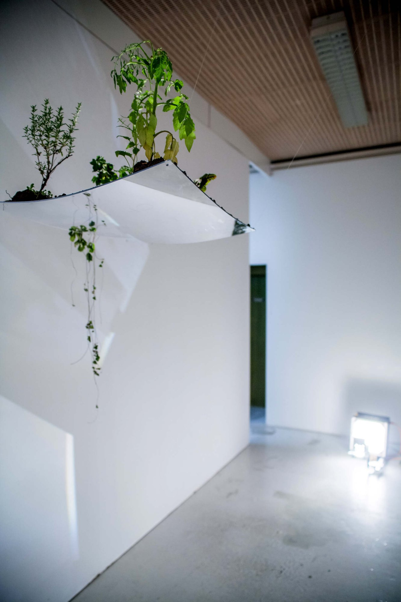
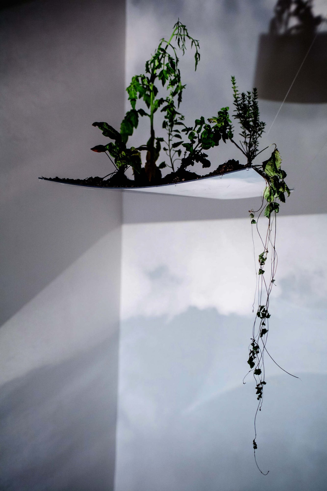
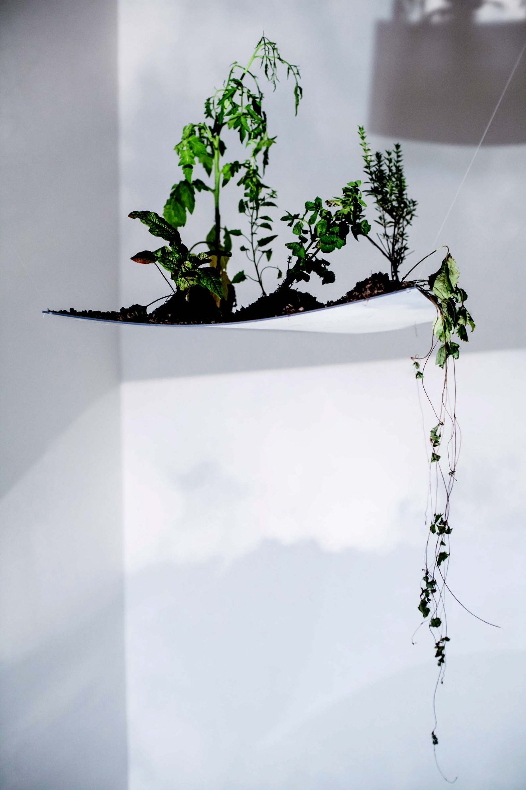
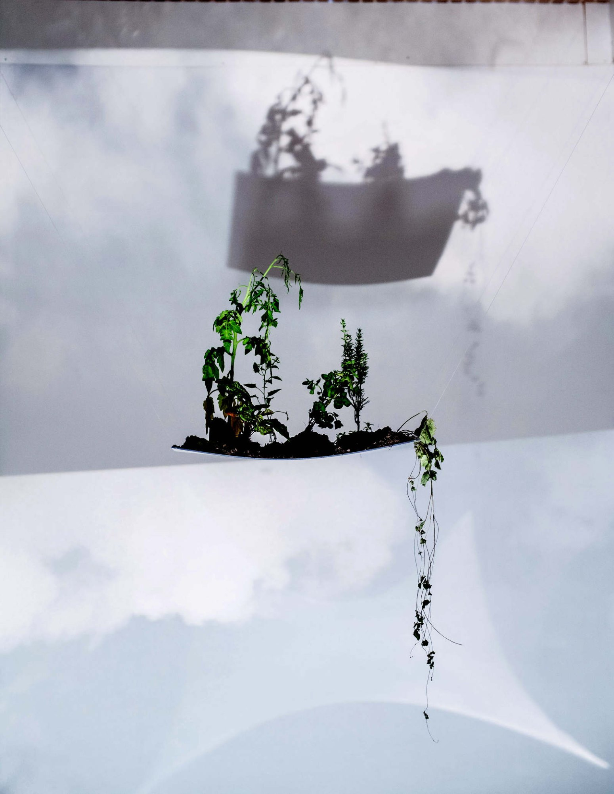
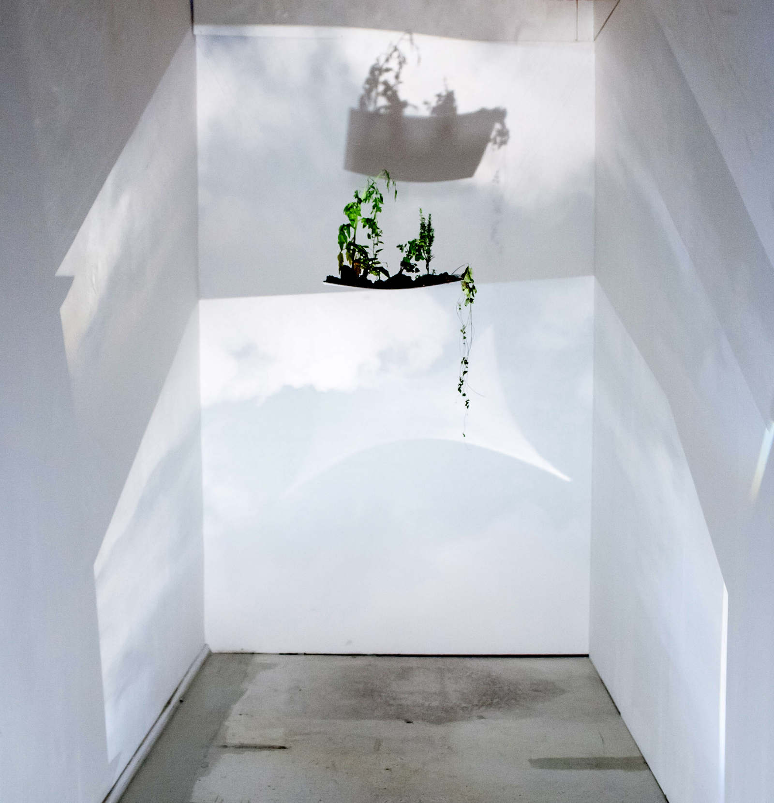
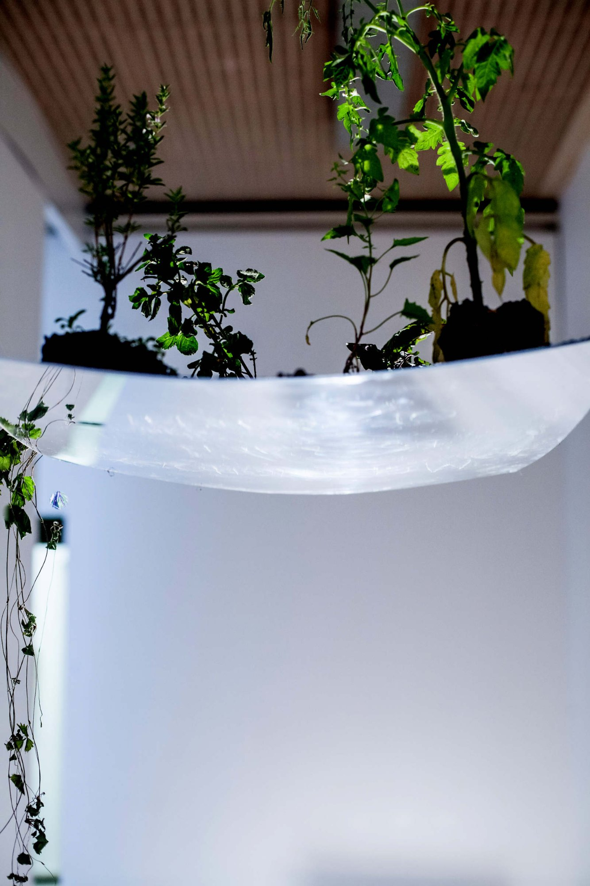
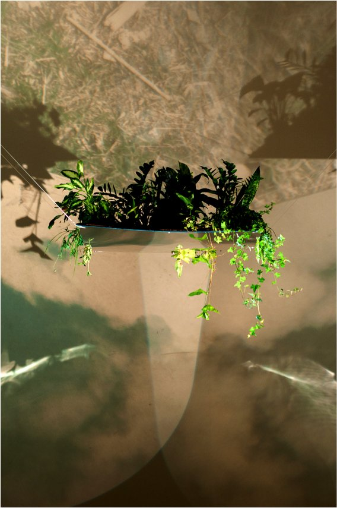

melancolia é a perda da terra (melancholy is lack of earth)








2014
espelhos, retroprojetores, plantas e impressão a laser sobre folhas de acetato (mirrors, overhead projectors, plants and laserprint on acetate sheets)
instalação (installation)